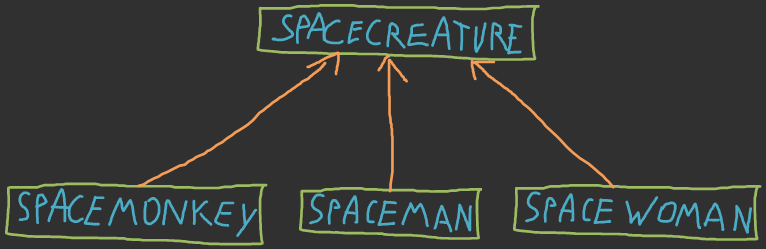

Webtechnology
Chapter 6 – Object Oriented PHP
Overview
Class basics
Classes in PHP
- Starting with PHP 5, the object model was rewritten to allow for better performance and more features.
- This was a major change from PHP 4. PHP 5 has a full object model.
- PHP treats objects in the same way as references or handles, meaning that each variable contains an object reference rather than a copy of the entire object.
Class definition
- Basic class definitions
- begins with the keyword class
- followed by a class name
- followed by a pair of curly braces which enclose the definitions of the properties and methods belonging to the class.
- The ability to package data with functions allow us to create new data types. This is also called encapsulation.
<?php
// Class definition
class User {
// Properties
// Methods
}
?>
Instantiation
- An object is an instance of a class. In other words, you can create more than one object from a single class.
- The process of creating an object from a class is called instantiation.
- To create an object, specify the
newkeyword followed by the name of the class and a set of parenthesis enclosing a comma separated list of constructor arguments.
<?php
// Instantiation
$ted = new User("Ted", "SomePasswordHash", "ted@hotmail.com");
?>
Properties
- Class member variables are called properties.
- The visibility of a property or method can be defined by prefixing the declaration with the keywords
public,protectedorprivate.- Class members declared public can be accessed everywhere.
- Members declared protected can be accessed only within the class itself and by inherited subclasses.
- Members declared as private may only be accessed by the class that defines the member.
Properties
<?php
class User
{
// Properties
private $id;
private $username;
private $passhash;
private $email;
}
?>
- A public property can be accessed by appending the object access operator
->to the object reference.
<?php
// Accessing a public property
print $someObj->publicProperty;
?>
Methods
- Methods define the actions that can be performed by an object (instance of a class).
- We can distinguish different method types according to the type of operation they perform:
- Getters (accessors) and setters (mutators)
- Action methods
- Constructors and destructors
- Class methods (static methods): belong to the class and not to the object of a class.
- Final methods: cannot be overridden by a method in a subclass.
- Abstract methods: get an implementation in subclass
Methods
- The visibility of a method can also be defined by prefixing the declaration with the keywords
public,protectedorprivate. - Methods can be accesses using the object access operator
->.
<?php
// Call a public method
$someObj->doSomething();
?>
Methods
Getters and Setters
- Getters (accessors): return the value of a property.
- Setters (mutators): assign a value to a property (with or without extra validation and or formatting).
- By using get and set methods we prohibit direct access to the internal properties. This is also known as data or information hiding.
Methods
Getters and Setters
<?php
// Read-only Properties
private $id;
// Read/Write Properties
private $email;
// GET Methods
public function getId() { return $this->id; }
public function getEmail() { return $this->email; }
// SET Methods
public function setEmail($email) { $this->email = $email; }
?>
Methods
Getters and Setters
- The pseudo-variable
$thisis available when a method is called from within an object context.$thisis a reference to the calling object (usually the object to which the method belongs). $thisis required (mandatory) when calling other methods from within a method.
Methods
Action methods
- Action methods perform a certain operation on the object.
<?php
public function __toString()
{
return "Username: " . $this->username
. " | Password: " . $this->passhash
. " | E-mail: " . $this->email;
}
?>
- The
__toString()method allows a class to decide how it will react when it is treated like a string.
Methods
Action methods
<?php
private function generateRandomString($length = 10)
{
$characters = '0123456789abcdefghijklmnopqrstuvwxyz
ABCDEFGHIJKLMNOPQRSTUVWXYZ';
$randomString = "";
for ($i = 0; $i < $length; $i++) {
$randomString .= $characters[rand(0, strlen($characters)-1)];
}
return $randomString;
}
public function generateRandomPasshash()
{
$this->passhash = hash("sha256",
$this->generateRandomString(100), false);
}
?>
Methods
Constructors
- Constructors initialize the internal properties of the object upon construction (instantiation) so that the object has a stable state and is suitable for use.
void __construct()- Parent constructors are not called implicitly if the child class defines a constructor.
- In order to run a parent constructor, a call to
parent::__construct()within the child constructor is required.
- In order to run a parent constructor, a call to
Methods
Constructors
<?php
// Constructor
public function __construct($id, $un, $passhash, $email)
{
$this->id = $id;
$this->username = $un;
$this->passhash = $passhash;
$this->email = $email;
}
?>
Methods
Constructor overloading
- PHP does NOT support constructor overloading (multiple constructors with different signatures)
- Can lead to really weird and ugly code constructs.
<?php
class A
{
/* No constructor overloading
public function __construct() { }
public function __construct($a, $b) { }
*/
}
?>
Methods
Constructor overloading
- Option: Default argument values
<?php
// Constructor
public function __construct($un, $passhash, $email, $id = 0)
{
$this->username = $un;
$this->passhash = $passhash;
$this->email = $email;
$this->id = $id;
}
?>
<?php
// Instantiation
$mark = new User("Mark", "sfd448rtre4dfs", "mark@gmail.com", 30);
$ted = new User("Ted", "qr48yumnm154iuy", "ted@hotmail.com");
?>
Methods
Destructors
- Destructors free resources and perform cleanup operations upon object destruction.
void __destruct ( void )- The destructor method will be called as soon as there are no other references to a particular object.
- Like constructors, parent destructors will not be called implicitly by the engine. In order to run a parent destructor, one would have to explicitly call
parent::__destruct()in the destructor body. - Destructors do NOT take arguments.
Methods
Overloading
- PHP 5.x.x does not support method overloading.
- You cannot overload PHP functions. Function signatures are based only on their names and do not include argument lists, so you cannot have two functions with the same name.
Methods
Overloading
- Class method overloading is different in PHP than in many other languages. PHP uses the same word but it describes a different pattern.
- Overloading in PHP provides means to dynamically "create" properties and methods. These dynamic entities are processed via magic methods one can establish in a class for various action types.
- The overloading methods are invoked when interacting with properties or methods that have not been declared or are not visible in the current scope.
Static methods and properties
- A static property (class property) or static method (class methods) is a property or method that belongs to the class, not to the object created from the class.
- Inside a class you can access a static property or method by coding the self keyword followed by a double colon and the property or method name.
<?php
class SomeClass {
// Static properties need to be initialized here (no object creation).
private static $objectCount = 0;
public function __construct() {
self::$objectCount++; // Update static property
}
public function __destruct() {
self::$objectCount--; // Update static property
}
}
?>
Static methods and properties
- Outside a class, you can access a static property or method that's public by coding the class name followed by a double colon and the static property or method name.
- When you access a static property, you must include the dollar sign at the beginning of the property's name.
- In a PHP application, the code space is separate for each user. As a result, static properties and methods aren’t shared between multiple users.
Static methods and properties
<?php
class SomeClass {
// Static properties need to be initialized here
// (no object creation).
private static $objectCount = 0;
//...
public static function getObjectCount() {
return self::$objectCount;
}
}
?>
<?php
echo "Object count: " . SomeClass::getObjectCount();
?>
Inheritance
Basics of Inheritance
- Inheritance is the process of creating a new class by inheriting and extending the properties and methods of an already existing class.
- A class that inherits from another class is called a subclass, derived class or child class.
- A class that is inherited by another class is called a superclass, base class or parent class.
Basics of Inheritance

Basics of Inheritance
- The subclass inherits the properties and methods of the superclass.
- Public and protected methods and properties are inherited by the subclass.
- Private methods and properties are not inherited by the subclass.
- The subclass can extend the superclass by adding new properties and methods.
Basics of Inheritance
Method overriding
- A subclass can also override (=/= overload) a method from the superclass with its own version of the method.
- Overriding methods have same signature.
- Overriding methods are placed in subclasses.
- Overloading methods have different signatures.
- Overloading methods are placed in the same classes.
- A subclass can call a method from the superclass by prefixing the method name with
parent::.
Basics of Inheritance
Method overriding
<?php
class User {
//...
// Constructor
public function __construct($un, $passhash, $email, $id = 0) {
$this->username = $un;
$this->passhash = $passhash;
$this->email = $email;
$this->id = $id;
}
//...
}
?>
Basics of Inheritance
Method overriding
<?php
include("User.php");
class PrivilegedUser extends User {
private $privilegeLevel;
// ...
public function __construct($un, $passhash, $email, $id, $privlevel = -1) {
parent::__construct($un, $passhash, $email, $id); // Call parent constructor
$this->privilegeLevel = $privlevel;
}
}
?>
- Notice the include of User.php
- Notice extends User
- Notice the call to the parent constructor for base type initialization
Basics of Inheritance
Overriding the toString of User
<?php
// Overriden __toString method
public function __toString() {
return "Username: " . $this->username
. " | Password: " . $this->passhash
. " | E-mail: " . $this->email;
}
?>
<?php
// Override the tostring method of the parent class
public function __toString() {
return parent::__toString() . " | Privilege level: "
. $this->privilegeLevel;
}
?>
Abstract classes and methods
- An abstract class is a class that can NOT be instantiated. It is useful as a superclass for other classes.
- An abstract method is a method that specifies the signature of the method but does not provide an implementation.
- A class can be declared abstract without abstract methods.
- A class containing abstract methods needs to be declared abstract.
- An abstract class can have a constructor which can be called from a derived class.
Abstract classes and methods
<?php
abstract class SpaceObject {
protected $coordinates;
protected $vertices;
public function __construct($coordinates) {
$this->coordinates = $coordinates;
}
public function addVertice($vertice) {
array_push($this->vertices, $vertice);
}
// Abstract methods
abstract public function drawObject();
abstract public function rotateObject();
abstract public function translateObject();
}
?>
Abstract classes and methods
- A final method cannot be overridden by a method in a subclass.
- A final class cannot be inherited from.
<?php
final class SomeFinalClass {
// ...
}
?>
<?php
class SomeClass {
// ...
// Cannot be overriden
final public function someFinalFunction() {
//...
}
}
?>
Interfaces
- An interface defines a set of public methods that can be implemented by a class.
- The interface does not provide any implementation, it only provides the method signatures.
- All methods in an interface must be public and cannot be static.
- A class that implements an interface must provide an implementation for each method defined by the interface unless it is declared abstract.
Interfaces
- An interface can define class constants that are available to any class that implements the interface.
- Although a class can only inherit from 1 class, it can implement multiple interfaces.
Interfaces
<?php
interface IDrawable {
const SOME_VALUE = 15;
public function drawObject();
public function rotateObject();
public function translateObject();
}
?>
- IDrawable defines a class constant
- IDrawable declares the public methods that should be implemented to make an instance of a class implementing IDrawable drawable.
Interfaces
<?php
abstract class SpaceObject implements IDrawable {
public function drawObject() {
// Implementation
}
public function rotateObject() {
// Implementation
}
}
?>
- SpaceObject implements IDrawable
- SpaceObject does however not supply implementations for all interface methods and therefore should be declared abstract
Interfaces
<?php
class SpaceMan extends SpaceObject {
public function translateObject() {
// Implementation
}
}
?>
- SpaceMan inherits from SpaceObject
- SpaceMan implements all methods of the IDrawable interface (combined with the implementations of its superclass)
Interfaces vs class interface
- A class interface is a contract specifying a set of methods and properties which will be available on any implementing object. It's the object's external face to the world.
- The interface of a class is the set of public methods and properties the class exposes.
Polymorphism
- Is the ability of objects belonging to different types to respond to method, field, or property calls of the same name, each one according to an appropriate type-specific behavior.
- The caller (calling code) likewise its programmer, does not have to know the exact type of the callee (called object), thus the exact behavior is determined at run-time (this is called late binding or dynamic binding).
Polymorphism
SpaceCreature example
<?php
interface ICreature {
public function showYourself();
}
class SpaceCreature implements ICreature {
public function showYourself() {
return "I am a SpaceCreature";
}
}
?>
- ICreature declares the public method
showYourself(). - SpaceCreate implements ICreature and gives
showYourself()an implementation.
Polymorphism
SpaceCreature example
<?php
class SpaceMan extends SpaceCreature {
public function showYourself() {
return "I am a SpaceMan";
}
}
class SpaceWomen extends SpaceCreature {
public function showYourself() {
return "I am a SpaceWomen";
}
}
?>
- SpaceMan and SpaceWomen both inherit from SpaceCreature and both override the
showYourself()method.
Polymorphism
SpaceCreature example
- Next we create a random (meh) list of space creatures and loop the list using a foreach calling the showYourself() method on each one. And this is where PM kicks in.
<?php
$mySpacePeople = array();
array_push($mySpacePeople, new SpaceWomen());
array_push($mySpacePeople, new SpaceCreature());
array_push($mySpacePeople, new SpaceMan());
array_push($mySpacePeople, new SpaceWomen());
//...
echo '<ul>';
foreach ($mySpacePeople as $alien) {
echo "<li>" . $alien->showYourself() . "</li>";
}
echo '</ul>';
?>
Cloning and comparing objects
Cloning and comparing objects
- To create a second reference to the same object you can use the assignment operator (=).
- To create a copy of an object you must use the clone operator.
- When using the clone operator PHP will only make a shallow copy of the object, meaning it does not clone nested objects.
Cloning and comparing objects
Copying the reference
Cloning and comparing objects
Shallow cloning
Cloning and comparing objects
Shallow cloning
Cloning and comparing objects
Deep object cloning
- Once the cloning is complete, if a __clone() method is defined, then the newly created object's __clone() method will be called, to allow any necessary properties that need to be changed.
- Like __construct and __destruct, you must call parent::__clone() yourself from inside a child's __clone() function.
Cloning and comparing objects
Deep object cloning
<?php
class SubObject {
public $someValue;
public function __construct() {
$this->someValue = 0;
}
}
class MyCloneable {
public $object1;
public $object2;
public function __construct() {
$this->object1 = new SubObject();
$this->object2 = new SubObject();
}
}
?>
Cloning and comparing objects
Deep object cloning
<?php
class MyCloneable {
// ...
public function __clone() {
// Force clones (shallow copies !)
$this->object1 = clone $this->object1;
$this->object2 = clone $this->object2;
}
}
?>
Cloning and comparing objects
Deep object cloning
Cloning and comparing objects
- Clone will not create a new instance and thus will not call the object's constructor. Clone seems to only allocate memory for the object cloned, and simply copies the variables memory from the original to the new one (imagine something alike memcpy() in C). Nothing more.
Comparing objects
- You can use the equality operator (==) to check whether both objects are instances of the same class and have the same values for every property.
- You can use the identity operator (===) to check whether both object variables refer to the same instance of an object.
Comparing objects
<?php
$obj = new MyCloneable();
$objRef = $obj;
print "<p class='info'>objRef = obj;</p>";
if ($obj == $objRef)
print "<p class='same'>objRef == obj: " . "TRUE" . "</p>";
else
print "<p class='notsame'>objRef == obj: " . "FALSE" . "</p>";
if ($obj === $objRef)
print "<p class='same'>objRef === obj: " . "TRUE" . "</p>";
else
print "<p class='notsame'>objRef === obj: " . "FALSE" . "</p>";
?>
Comparing objects
<?php
$obj = new MyCloneable();
$objRef = clone $obj;
print "<p class='info'>objRef = clone obj;</p>";
if ($obj == $objRef)
print "<p class='same'>objRef == obj: " . "TRUE" . "</p>";
else
print "<p class='notsame'>objRef == obj: " . "FALSE" . "</p>";
if ($obj === $objRef)
print "<p class='same'>objRef === obj: " . "TRUE" . "</p>";
else
print "<p class='notsame'>objRef === obj: " . "FALSE" . "</p>";
?>
Comparing objects
<?php
$obj = new MyCloneable();
$objRef = clone $obj;
$obj->object1->someValue = 25;
print "<p class='info'>objRef = clone obj;</p>";
print "<p class='info'>Also changed object1->somevalue of obj</p>";
if ($obj == $objRef)
print "<p class='same'>objRef == obj: " . "TRUE" . "</p>";
else
print "<p class='notsame'>objRef == obj: " . "FALSE" . "</p>";
if ($obj === $objRef)
print "<p class='same'>objRef === obj: " . "TRUE" . "</p>";
else
print "<p class='notsame'>objRef === obj: " . "FALSE" . "</p>";
?>